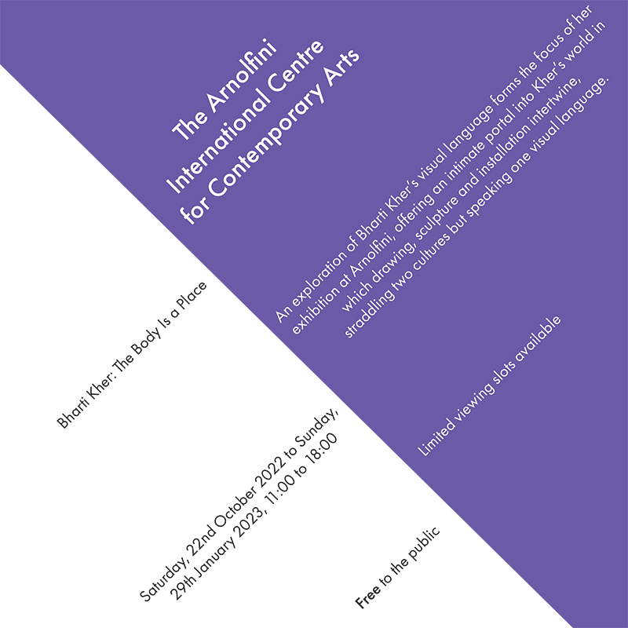
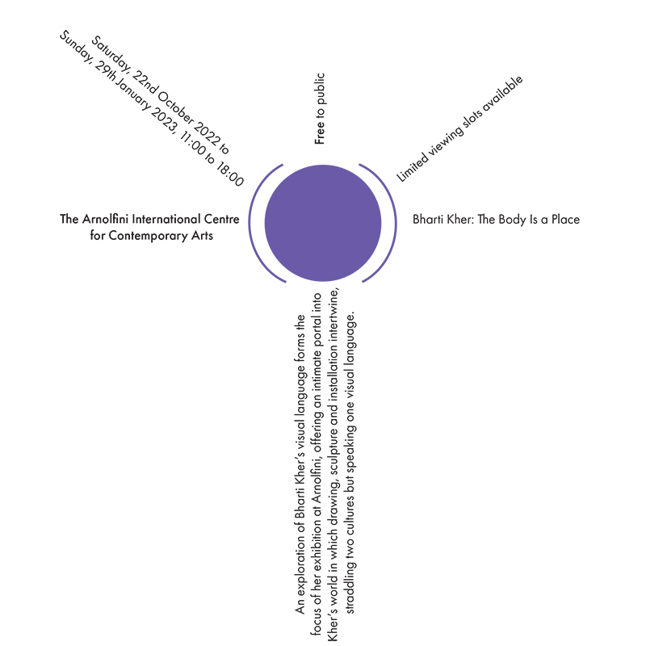
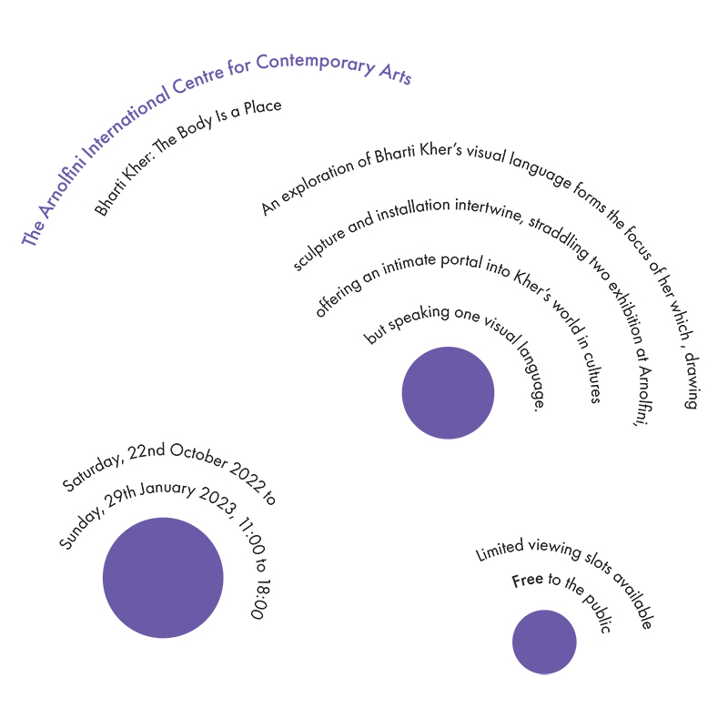
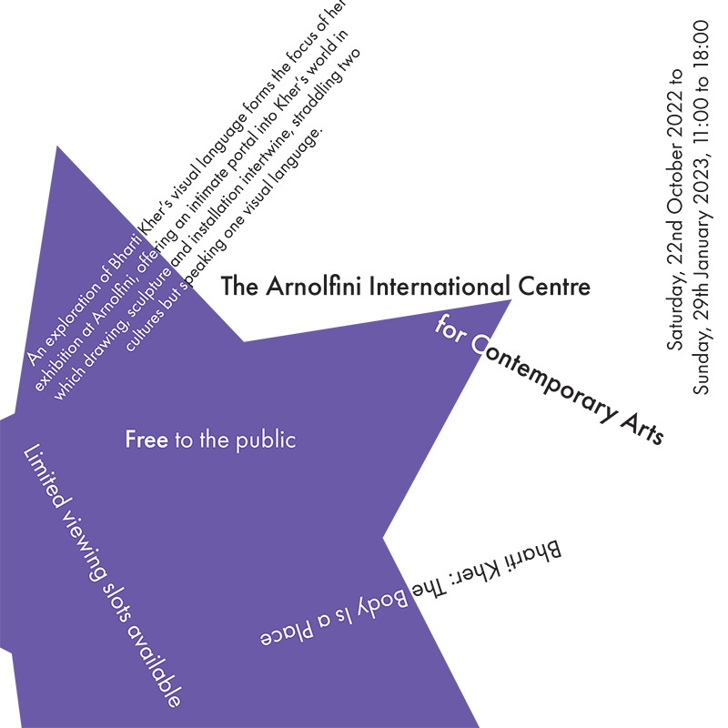
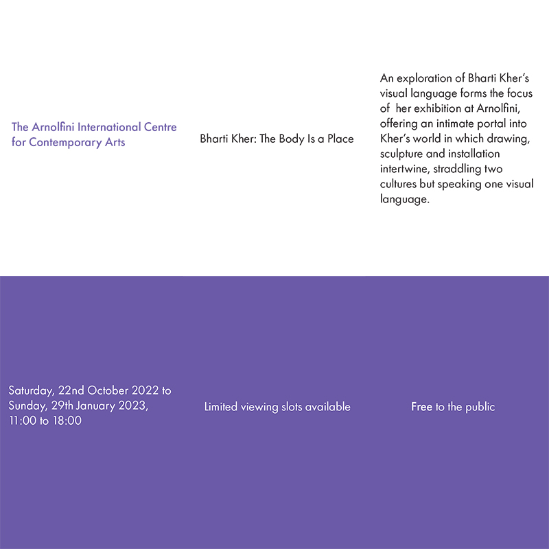
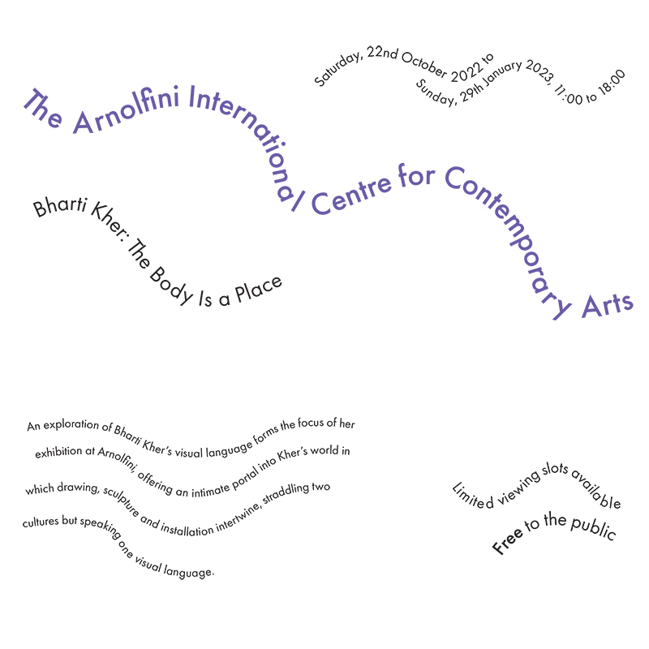
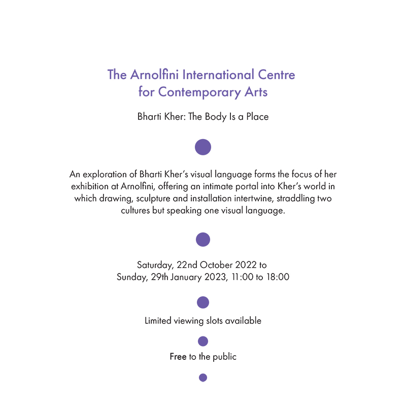

Typographic Systems
These are the posters I prepared for 8 different typographic systems.

In Axial System, all elements are arranged to the left or right of a single axis.

In Radial System, all elements extend from a central point of focus.

In Dilatational System, all elements extend in a circular pattern from a central point.

In Random System, elements don't follow any clear patterns or relationships.

In Grid System, all elements follow the system of vertical and horizontal divisions.
In Modular System, all elements are built as standardized units.

In Transitional System, all elements have an informal layered system.

In Bilateral System, all elements symmetrically placed on a single axis.